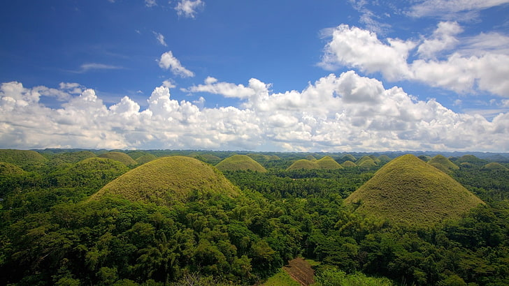

| Home |
About |
Articles |
Registration |
Welcome to the Deforestation Website
Learn about deforestation, it's effects and much more to discover.
What Causes Deforestation?
Anywhere that has a high concentration of trees on the ground, deforestation can happen intentionally, naturally, or accidently. Deforestation causes include the following:
- Volcanic Eruptions
- Typhoons
- Temperature & Climate Change
- Drought
- Logging
- Mining
- Land Development
What Can Deforestation lead to?
These occurrences are risky because deforestation is a self-sustaining process that encourages more destruction.
Flooding, soil erosion, higher temperatures, and desertification can all happen more quickly and dramatically as a result of the loss of trees and underbrush.
The following are the effects and results brought on by ongoing deforestation:
Atmospheric
Forests are carbon sinks that sequester carbon dioxide from the atmosphere and release oxygen in its place.
By releasing the carbon dioxide they have stored back into the environment after being cut down, trees emit more greenhouse gases into the atmosphere.
Water Effects
The amount of water in the atmosphere is regulated in part by trees. As trees are removed, less water is available for the soil to absorb.
Animal Habitats
Forest trees provide shelter, while the canopy helps regulate light and temperatures.
As these trees are removed, temperature variations, increased sunlight, and vulnerability could prove fatal for all forest plant and animal species.
Deforestation causes drier soil, which eventually won't sustain farming or cattle ranching.
How can we prevent this?
There are several angles from which to view potential countermeasures to deforestation. Stopping the human actions that are creating it is the obvious solution.
However, as the population grows, so does the demand for the goods produced on previously forested area.
Plant a Tree- Every tree planted and cared for abates the effects of deforestation.
